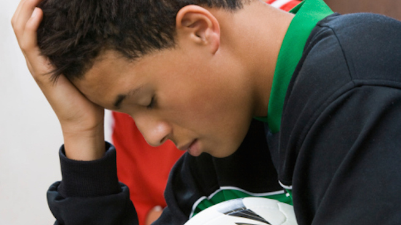

Self-awareness involves being aware of different aspects of the self including traits, behaviors, and feelings. Essentially, it is a psychological state in which oneself becomes the focus of attention.
Radical acceptance can be defined as the ability to accept situations that are outside of your control without judging them, which in turn reduces the suffering that is caused by them.
Rather than being attached to a painful past, radical acceptance suggests that non-attachment is the key to overcoming suffering. Non-attachment does not mean not feeling emotions. Rather, it refers to an intention of not allowing pain to turn into suffering. This means watching your thoughts and feelings to identify when you are allowing yourself to feel worse than is necessary.
Self-awareness is one of the first components of the self-concept to emerge. While self-awareness is something that is central to who you are, it is not something that you are acutely focused on at every moment of every day. Instead, self-awareness becomes woven into the fabric of who you are and emerges at different points depending on the situation and your personality.
"
No person is your friend who demands your silence, or denies your right to grow.
"
What Radical Acceptance Looks Like?
Radical acceptance is not an easy practice at all. In fact, it can require a lifetime of practice in order to truly get a handle on it.
Radical acceptance is most often applied in situations when you are unable to fix or change what has happened or when something has happened that feels unfair, like the loss of a loved one or losing one’s job.
While grief and disappointment are normal emotions, suffering results when the initial pain is prolonged due to a lack of acceptance.
Origins of Radical Acceptance
The concept of radical acceptance has its origins in dialectical behavior therapy (DBT), proposed by psychologist Marsha Linehan in 1993. This type of therapy was designed to help those diagnosed with borderline personality disorder who experience intense emotions. However, it is also helpful for other issues such as depression and eating disorders.
During DBT, clients are taught how to practice distress tolerance which enables them to stop turning painful situations into longer-term suffering.
Rather than signaling approval of a situation, distress tolerance signals acceptance and emotional detachment. It involves a focus on what you can control and a freeing of resources to allow you to practice self-care.
In fact, the word dialectical refers to the duality of the emotional mind and logical mind that must be balanced through what is called the wise mind in DBT. This refers to taking thoughtful action after removing the overly emotional part of how you handle a problem in your life. In this way, acceptance does not refer to judging or evaluating, but rather taking reality for what it is so that you can move on with your life.
Signs of Lack of Acceptance
While it’s normal to react to negative situations with emotions such as sadness or anger, blaming yourself or other people, or wishing that things could be different will keep you stuck.
Here are some thought patterns or actual thoughts that signal you might need to practice radical acceptance:

I can’t deal with this.
This is not fair.
Things shouldn’t be like this.
I can’t believe this is happening.
It’s not right.
Things should be different.
Why is this happening to me?
Why is this happening now?
Reasons for Lack of Acceptance
Some people have a hard time accepting situations because they feel as though acceptance is the same thing as being in agreement with what happened or saying that it is OK. In other cases, people don’t want to acknowledge the pain that would come with acceptance.
That does not mean that it is impossible for you to feel differently or eventually get to a place of acceptance. It just will require practice and dedication.
The problem with a lack of acceptance is that when you try to not feel pain, you are also choosing to not feel joy and happiness at the same time. Avoiding your emotions means creating more problems in the long run such as anxiety, depression, addiction, and other mental health concerns. Instead, practicing calm acceptance will allow you to process your emotions and move forward.